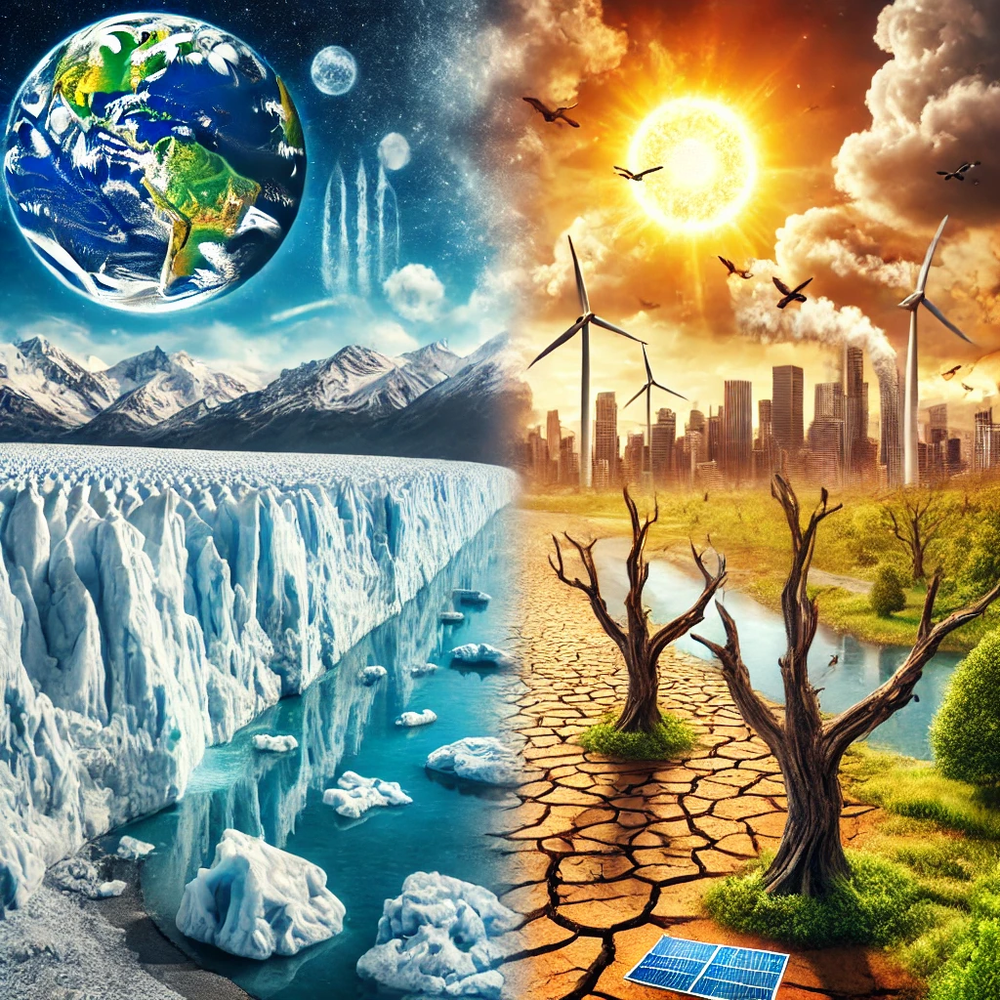

İKLİM DEĞİŞİKLİĞİ
İKLİM DEĞİŞİKLİĞİ VE ETKİLEYEN FAKTÖRLER !
İklim değişikliği, Dünya’nın ikliminde uzun vadede meydana gelen değişiklikleri ifade eder.
Bu, sıcaklıkların yükselmesi, deniz seviyesinin artması, ekstrem hava olaylarının sıklığının ve şiddetinin artması gibi etkileri kapsar.
İklim değişikliği, büyük ölçüde insan faaliyetlerinin bir sonucu olarak ortaya çıkıyor.
Fosil yakıtların yakılması, ormansızlaşma ve tarım gibi faaliyetler atmosfere büyük miktarda sera gazı salıyor ve bu da küresel ısınmaya yol açıyor.
İklim değişikliğini etkileyen olaylardan Fosil yakıtların çevreye etkileri
- 1. Sera Gazı Emisyonları ve Küresel Isınma
Fosil yakıtların yakılması, büyük miktarda karbondioksit (CO₂) ve diğer sera gazlarını (örneğin metan, azot oksitler) atmosfere salar.
Bu gazlar, atmosferdeki doğal sera etkisini güçlendirir ve küresel sıcaklıkların artmasına (küresel ısınma) neden olur.
Küresel ısınma, iklim değişikliklerine yol açarak, aşırı hava olayları (kuraklık, seller, sıcak hava dalgaları) ve deniz seviyelerinin yükselmesi gibi olumsuz sonuçlara yol açar.
- 2. Hava Kirliliği
Fosil yakıtların yanması sonucu salınan kirleticiler, hava kalitesini olumsuz etkiler.
Özellikle kömür ve petrolün yanması sonucu karbon monoksit (CO), azot oksitler (NOₓ) ve sülfür dioksit (SO₂) gibi zararlı maddeler atmosfere yayılır.
Bu maddeler, asidik yağmurların oluşmasına ve solunum yolu hastalıklarının artmasına neden olabilir.
Ayrıca, bu kirleticiler, başta büyük şehirler olmak üzere, hava kirliliği sorunlarını artırır.
- 3. Asidik Yağmurlar
Fosil yakıtların yakılmasından kaynaklanan sülfür dioksit (SO₂) ve azot oksitler (NOₓ), atmosfere karışarak su buharı ile birleşir ve asidik yağmurların oluşmasına yol açar.
Asidik yağmurlar, toprakların asidik dengesini bozar, su ekosistemlerini zarar görmesine neden olur ve bitki örtüsünü olumsuz etkiler.
- 4. Doğal Kaynakların Tükenmesi
Fosil yakıtlar sınırlı ve tükenebilir kaynaklardır.
Bu kaynakların aşırı kullanımı, bu yakıtların tükenmesine yol açabilir.
Ayrıca fosil yakıt çıkarma süreçleri, doğanın bozulmasına ve ekosistemlerin zarar görmesine yol açar.
- 5. Su Kirliliği
Fosil yakıt üretimi ve taşınması sırasında, özellikle petrol sızıntıları ve deniz taşımacılığı gibi faktörler su kirliliğine yol açabilir. Bu kirlilik, deniz yaşamını tehdit eder ve su kaynaklarını kirletir.
- 6. Toprak Kirliliği ve Habitat Tahribatı
Fosil yakıtların çıkarılması, özellikle açık ocak madenciliği (kömür madenciliği) ve petrol arama faaliyetleri, toprak kirliliğine ve habitat tahribatına neden olur. Bu tür faaliyetler, yerel ekosistemlerin yok olmasına, biyoçeşitliliğin azalmasına ve bitki örtüsünün tahrip olmasına yol açabilir.
- 7. Ozon Tabakasının Zayıflaması
Fosil yakıtların bazı türleri, özellikle petrol ve kömür, ozon tabakasını zayıflatan maddeler içerir.
Ozon tabakasının zayıflaması, UV ışınlarının daha fazla Dünya yüzeyine ulaşmasına ve
bunun da cilt kanseri gibi sağlık sorunlarına yol açmasına neden olabilir.
- 8. Fosil Yakıtların Çevresel Maliyetleri
Fosil yakıtların çevreye verdiği zararlar, sağlık hizmetleri, ekosistem restorasyonu,
felaket yönetimi gibi alanlarda ciddi ekonomik maliyetlere yol açmaktadır.
Bu maliyetler, hükümetler ve toplumlar üzerinde büyük bir finansal yük oluşturur.
- 9. Petrol ve Doğal Gazın Sızmaları
Fosil yakıtların taşınması sırasında yaşanan sızıntılar ve kazalar, çevreye büyük zararlar verir.
Özellikle petrol sızıntıları, deniz ekosistemlerini tahrip eder ve uzun yıllar süren çevresel etkiler bırakır.
